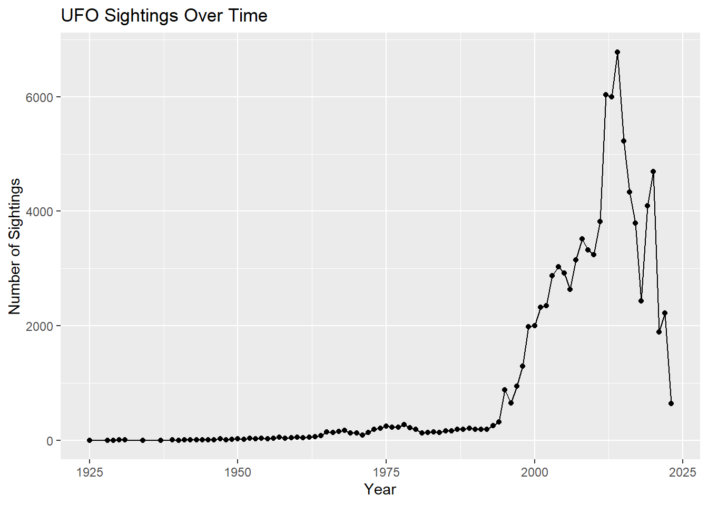
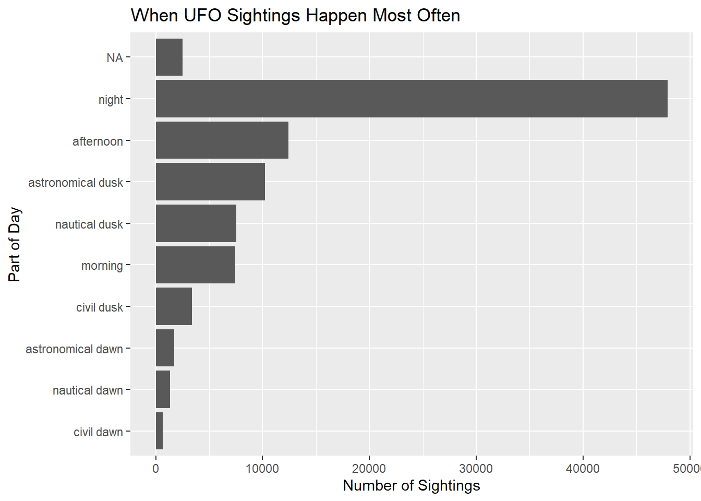

Joint work with Joseph Dee. Source code is available on GitHub.
This project builds a small analytical database from the TidyTuesday UFO sightings dataset and uses SQL to explore when, where, and how sightings were reported.
Accessing the data
The data consists of three CSV files: ufo_sightings.csv, places.csv, and day_parts_map.csv. ufo_sightings shares city and state with places, and shares its date fields with day_parts_map, which lets the tables be joined together. After loading the files, we remove duplicate rows so that each table has a clean key, then write the cleaned data back out for import into the database.
raw_ufo_sightings <- readr::read_csv('https://raw.githubusercontent.com/rfordatascience/tidytuesday/main/data/2023/2023-06-20/ufo_sightings.csv')raw_places <- readr::read_csv('https://raw.githubusercontent.com/rfordatascience/tidytuesday/main/data/2023/2023-06-20/places.csv')day_parts_map <- readr::read_csv('https://raw.githubusercontent.com/rfordatascience/tidytuesday/main/data/2023/2023-06-20/day_parts_map.csv')glimpse(raw_ufo_sightings) # `shape` has many NAs; `day_part` has some NAs
# `places` contains ~625 rows with duplicate latitude/longitude pairs.places <- raw_places %>%distinct(latitude, longitude, .keep_all =TRUE)# We use (reported_date_time_utc, city) as the key for sightings.ufo_sightings <- raw_ufo_sightings %>%distinct(reported_date_time_utc, city, .keep_all =TRUE)write_csv(ufo_sightings, "ufo_sightings.csv")write_csv(places, "places.csv")write_csv(day_parts_map, "day_parts_map.csv")
Designing the database
We store the data in a local DuckDB database and define an explicit schema for each table, including column types, nullability, and primary keys. Column types follow the DuckDB data type reference.
# Use an in-memory DuckDB database. Every table is rebuilt from the CSV files# on each render, so nothing needs to persist to disk. An in-memory database# also avoids the file-lock error that occurs on Windows when a previous# connection to a "UFO_db" file is still open.con_UFO <- DBI::dbConnect(duckdb::duckdb(), dbdir =":memory:")
The day_parts_map table contains NAs in nautical_twilight_begin and astronomical_twilight_end, so those columns allow nulls.
CREATETABLE day_parts_map ( rounded_lat INTNOTNULL, rounded_long INTNOTNULL, rounded_date DATENOTNULL, astronomical_twilight_begin TIME, nautical_twilight_begin TIME, civil_twilight_begin TIME, sunrise TIME, solar_noon TIME, sunset TIME, civil_twilight_end TIME, nautical_twilight_end TIME, astronomical_twilight_end TIME,PRIMARYKEY (rounded_lat, rounded_long, rounded_date));
This query examines when sightings were reported most often by grouping reports by day_part, allowing us to compare counts across categories such as night, afternoon, morning, and the various twilight periods.
SELECT day_part, COUNT(*) AS sightingsFROM ufo_sightingsGROUPBY day_partORDERBY sightings DESC;
Displaying records 1 - 10
day_part
sightings
night
47908
afternoon
12443
astronomical dusk
10240
nautical dusk
7532
morning
7454
civil dusk
3408
NA
2527
astronomical dawn
1718
nautical dawn
1313
civil dawn
662
Sightings were most commonly reported at night, suggesting they were concentrated during darker conditions, when unusual lights or objects may be easier to notice. Time of day was clearly an important part of the reporting pattern in this dataset.
Query 2: Population-adjusted sightings by state
This query compares sightings across U.S. states while adjusting for population. Rather than counting raw totals, it calculates sightings per million residents, giving a fairer comparison between large and small states.
WITH state_pop AS (SELECT state, SUM(population) AS popFROM (SELECTDISTINCT city, state, country_code, populationFROM placesWHERE country_code ='US'AND state ISNOTNULLAND population >0 )GROUPBY state),state_sightings AS (SELECT state, COUNT(*) AS sightingsFROM ufo_sightingsWHERE country_code ='US'AND state ISNOTNULLGROUPBY state)SELECT s.state, s.sightings, p.pop, s.sightings *1000000.0/ p.pop AS sightings_per_millionFROM state_sightings sJOIN state_pop pON s.state = p.stateORDERBY sightings_per_million DESC;
Displaying records 1 - 10
state
sightings
pop
sightings_per_million
MT
649
569753
1139.0901
VT
284
271422
1046.3411
WA
4971
5325191
933.4876
ID
890
1014189
877.5485
DE
270
308255
875.8982
OR
2490
2894265
860.3221
WV
516
602582
856.3150
ME
737
865358
851.6706
SC
1499
1812282
827.1340
AK
412
511461
805.5355
Adjusting for population highlights states where sightings were unusually common relative to the number of residents. This is more informative than raw totals, since larger states naturally tend to accumulate more reports.
Query 3: Reported shape by part of day
This query examines whether reported shapes varied by part of day. Grouping by both day_part and shape lets us compare how different types of sightings appeared across different lighting conditions.
The results connect what people reported seeing with when they reported it. If certain shapes appear more often at night or around dusk, that may suggest lighting conditions influenced how sightings were perceived and described.
Query 4: Image documentation by shape
This query examines whether certain shapes were more likely to include images. For each shape it counts total sightings, counts how many included images, and calculates the percentage with images. We limit the results to shapes with at least 50 sightings so that rare categories do not distort the comparison.
SELECT shape,COUNT(*) AS total_sightings,SUM(CASEWHEN has_images THEN1ELSE0END) AS with_images,100.0*SUM(CASEWHEN has_images THEN1ELSE0END) /COUNT(*) AS pct_with_imagesFROM ufo_sightingsWHERE shape ISNOTNULLGROUPBY shapeHAVINGCOUNT(*) >=50ORDERBY pct_with_images DESC;
Displaying records 1 - 10
shape
total_sightings
with_images
pct_with_images
diamond
1363
0
0
star
64
0
0
changing
2463
0
0
other
6400
0
0
flash
1605
0
0
teardrop
836
0
0
chevron
1250
0
0
disk
5237
0
0
fireball
7191
0
0
formation
3367
0
0
This adds another layer to the analysis: it asks not only what people saw, but whether certain types of sightings were more likely to be supported by an image. Such differences may reflect variation in visibility, duration, or how distinct a given shape appeared to observers.
Visualizations
Sightings over time
This visualization examines how sightings changed over time by grouping reports by year, showing broader reporting trends across the dataset.
sightings_by_year <- DBI::dbGetQuery(con_UFO, " SELECT EXTRACT(year FROM reported_date_time) AS year, COUNT(*) AS sightings FROM ufo_sightings WHERE reported_date_time IS NOT NULL GROUP BY year ORDER BY year;")ggplot(sightings_by_year, aes(x = year, y = sightings)) +geom_line() +geom_point() +labs(title ="UFO Sightings Over Time",x ="Year",y ="Number of Sightings" )

Sightings remained relatively low and stable through much of the early period, then increased sharply beginning in the late 1990s and early 2000s before peaking and declining in more recent years. This pattern suggests that reporting behavior or public interest changed considerably over time.
Sightings by part of day (raw counts)
This visualization compares the number of reports across parts of the day, making it easier to see whether sightings were concentrated during darker periods or spread more evenly.
daypart_counts <-dbGetQuery(con_UFO, " SELECT day_part, COUNT(*) AS sightings FROM ufo_sightings GROUP BY day_part ORDER BY sightings DESC;")ggplot(daypart_counts, aes(x =reorder(day_part, sightings), y = sightings)) +geom_col() +coord_flip() +labs(title ="When UFO Sightings Happen Most Often",x ="Part of Day",y ="Number of Sightings" )

Sightings were overwhelmingly concentrated at night, with far more reports than any other period. The afternoon and dusk periods saw notable numbers as well, while morning and dawn were much lower. This again suggests sightings were more likely to be reported in darker conditions.
Sightings by part of day (normalized per hour)
Raw counts are misleading because “night” spans far more hours than “dusk” or “dawn.” To account for this, the query below normalizes sightings by the duration of each day-part at each rounded location and date, yielding sightings per available hour. The SQL for this normalization was drafted with the assistance of ChatGPT (conversation), based on my approach of rounding the latitude and longitude in places to match day_parts_map and joining on rounded location and date.
daypart_per_hour <-dbGetQuery(con_UFO, "WITH sighting_rows AS ( SELECT u.day_part, ROUND(p.latitude, -1) AS rounded_lat, ROUND(p.longitude, -1) AS rounded_long, DATE(u.reported_date_time_utc) AS rounded_date FROM ufo_sightings u JOIN places p ON u.city = p.city AND u.state = p.state AND u.country_code = p.country_code WHERE u.day_part IS NOT NULL),counts AS ( SELECT day_part, rounded_lat, rounded_long, rounded_date, COUNT(*) AS sightings FROM sighting_rows GROUP BY day_part, rounded_lat, rounded_long, rounded_date),durations AS ( SELECT rounded_lat, rounded_long, rounded_date, ( CASE WHEN EXTRACT(EPOCH FROM astronomical_twilight_end) < EXTRACT(EPOCH FROM astronomical_twilight_begin) THEN EXTRACT(EPOCH FROM astronomical_twilight_end) + 86400 ELSE EXTRACT(EPOCH FROM astronomical_twilight_end) END - EXTRACT(EPOCH FROM astronomical_twilight_begin) ) / 3600.0 AS night_hours, ( CASE WHEN EXTRACT(EPOCH FROM nautical_twilight_begin) < EXTRACT(EPOCH FROM astronomical_twilight_begin) THEN EXTRACT(EPOCH FROM nautical_twilight_begin) + 86400 ELSE EXTRACT(EPOCH FROM nautical_twilight_begin) END - EXTRACT(EPOCH FROM astronomical_twilight_begin) ) / 3600.0 AS astronomical_dawn_hours, ( CASE WHEN EXTRACT(EPOCH FROM civil_twilight_begin) < EXTRACT(EPOCH FROM nautical_twilight_begin) THEN EXTRACT(EPOCH FROM civil_twilight_begin) + 86400 ELSE EXTRACT(EPOCH FROM civil_twilight_begin) END - EXTRACT(EPOCH FROM nautical_twilight_begin) ) / 3600.0 AS nautical_dawn_hours, ( CASE WHEN EXTRACT(EPOCH FROM sunrise) < EXTRACT(EPOCH FROM civil_twilight_begin) THEN EXTRACT(EPOCH FROM sunrise) + 86400 ELSE EXTRACT(EPOCH FROM sunrise) END - EXTRACT(EPOCH FROM civil_twilight_begin) ) / 3600.0 AS civil_dawn_hours, ( CASE WHEN EXTRACT(EPOCH FROM solar_noon) < EXTRACT(EPOCH FROM sunrise) THEN EXTRACT(EPOCH FROM solar_noon) + 86400 ELSE EXTRACT(EPOCH FROM solar_noon) END - EXTRACT(EPOCH FROM sunrise) ) / 3600.0 AS morning_hours, ( CASE WHEN EXTRACT(EPOCH FROM sunset) < EXTRACT(EPOCH FROM solar_noon) THEN EXTRACT(EPOCH FROM sunset) + 86400 ELSE EXTRACT(EPOCH FROM sunset) END - EXTRACT(EPOCH FROM solar_noon) ) / 3600.0 AS afternoon_hours, ( CASE WHEN EXTRACT(EPOCH FROM civil_twilight_end) < EXTRACT(EPOCH FROM sunset) THEN EXTRACT(EPOCH FROM civil_twilight_end) + 86400 ELSE EXTRACT(EPOCH FROM civil_twilight_end) END - EXTRACT(EPOCH FROM sunset) ) / 3600.0 AS civil_dusk_hours, ( CASE WHEN EXTRACT(EPOCH FROM nautical_twilight_end) < EXTRACT(EPOCH FROM civil_twilight_end) THEN EXTRACT(EPOCH FROM nautical_twilight_end) + 86400 ELSE EXTRACT(EPOCH FROM nautical_twilight_end) END - EXTRACT(EPOCH FROM civil_twilight_end) ) / 3600.0 AS nautical_dusk_hours, ( CASE WHEN EXTRACT(EPOCH FROM astronomical_twilight_end) < EXTRACT(EPOCH FROM nautical_twilight_end) THEN EXTRACT(EPOCH FROM astronomical_twilight_end) + 86400 ELSE EXTRACT(EPOCH FROM astronomical_twilight_end) END - EXTRACT(EPOCH FROM nautical_twilight_end) ) / 3600.0 AS astronomical_dusk_hours FROM day_parts_map),duration_long AS ( SELECT rounded_lat, rounded_long, rounded_date, 'night' AS day_part, night_hours AS hours FROM durations UNION ALL SELECT rounded_lat, rounded_long, rounded_date, 'astronomical dawn', astronomical_dawn_hours FROM durations UNION ALL SELECT rounded_lat, rounded_long, rounded_date, 'nautical dawn', nautical_dawn_hours FROM durations UNION ALL SELECT rounded_lat, rounded_long, rounded_date, 'civil dawn', civil_dawn_hours FROM durations UNION ALL SELECT rounded_lat, rounded_long, rounded_date, 'morning', morning_hours FROM durations UNION ALL SELECT rounded_lat, rounded_long, rounded_date, 'afternoon', afternoon_hours FROM durations UNION ALL SELECT rounded_lat, rounded_long, rounded_date, 'civil dusk', civil_dusk_hours FROM durations UNION ALL SELECT rounded_lat, rounded_long, rounded_date, 'nautical dusk', nautical_dusk_hours FROM durations UNION ALL SELECT rounded_lat, rounded_long, rounded_date, 'astronomical dusk', astronomical_dusk_hours FROM durations)SELECT c.day_part, SUM(c.sightings) AS sightings, SUM(d.hours) AS total_available_hours, SUM(c.sightings) / SUM(d.hours) AS sightings_per_hourFROM counts cJOIN duration_long d ON c.rounded_lat = d.rounded_lat AND c.rounded_long = d.rounded_long AND c.rounded_date = d.rounded_date AND c.day_part = d.day_partGROUP BY c.day_partORDER BY sightings_per_hour DESC;")
ggplot(daypart_per_hour, aes(x =reorder(day_part, sightings), y = sightings_per_hour)) +geom_col() +coord_flip() +labs(title ="When UFO Sightings Happen Most Often",x ="Part of Day",y ="Number of Sightings Per Hour" )
After normalizing for the share of the day each part occupies, dusk and dawn show a much higher density of sightings than night, morning, or afternoon. Dusk and dawn are also the times of poorest visibility: low sun angles create glare, and rapidly changing light levels make it harder for the eye to adjust, reducing peripheral vision and depth perception. This may help explain the elevated number of sightings reported during these periods.